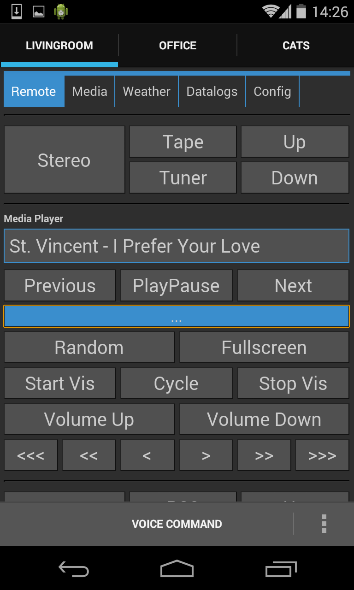
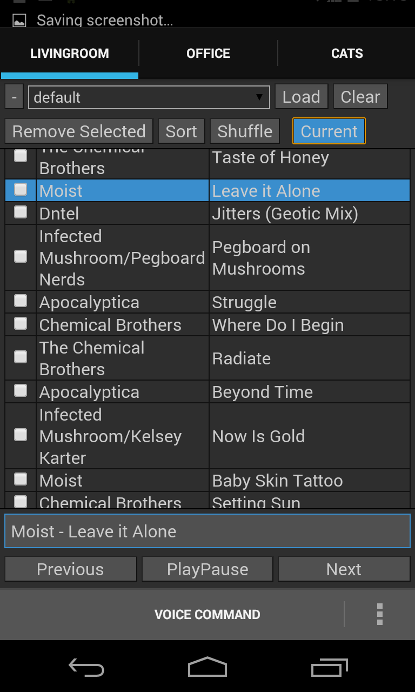
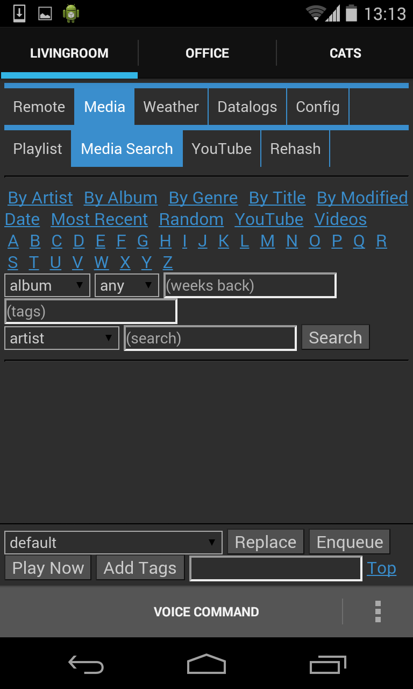
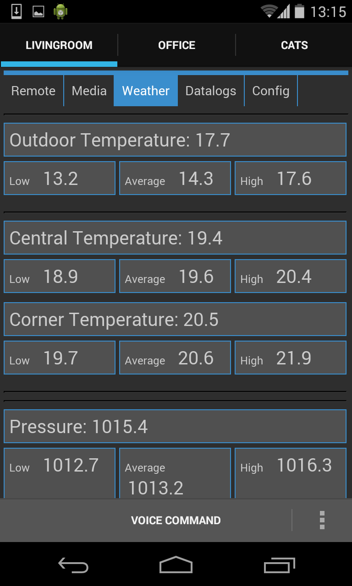
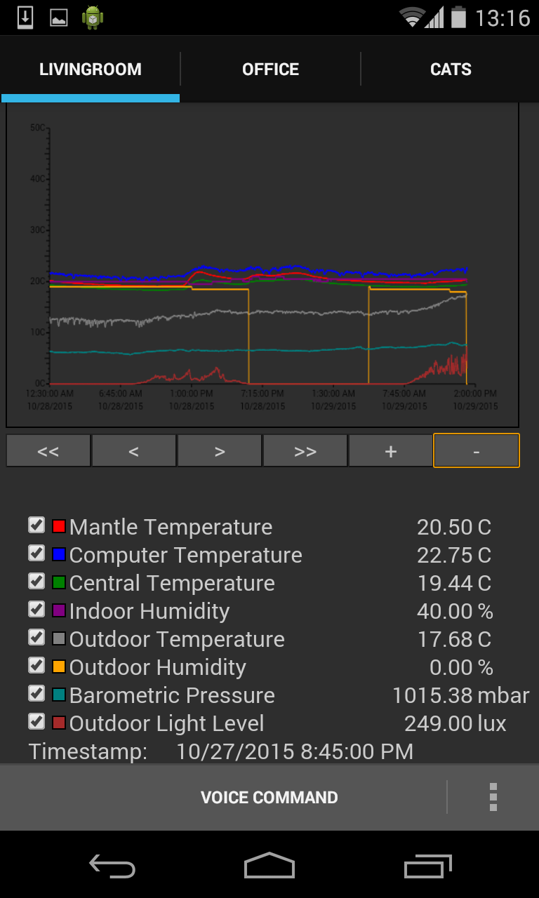
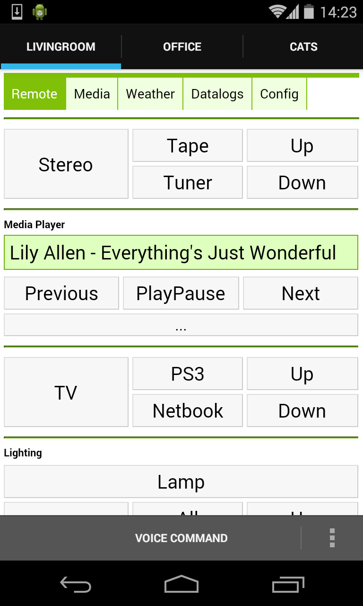
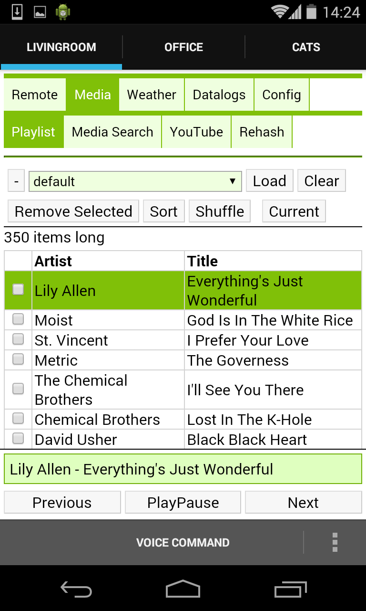
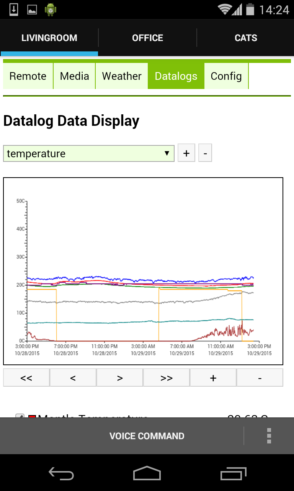

Nerve Control Network
Started August 05, 2013
Nerve is a web-based home automation system implemented in python3. It's primarily used as an interface to a media player/media library (VLC, XMMS2, etc). Its modular structure makes it easy to extend and customize, and its generic widgets and devices system makes it easier to tie together different hardware devices, sensors, and internet information sources into one place (or across distributed servers).
Installation
Unpack the source code where ever is most convenient. Check out dependencies.txt for a list of the Debian packages required for various features. Most Debian/Ubuntu based distros will likely have the same package names. The code has been run in Windows 7, with python and the necessary python libraries installed manually, although I no longer test the code on Windows.
To run the code, while in the source directory, use the command:
python3 nerve.py
The default configuration directory is ~/.nerve, however it can be set on the command line:
python3 nerve.py -c config/<site>
The configuration for a particular instance is stored entirely in the configuration directory. Different instances can be run on the same computer by simply specifying a different configuration directory to use.
Even better is to run nerve using:
nerve.sh config/<site>
This script will check for a 'restart' exit status and relaunch nerve if found, so that the server can be restarted using a specific query.
Configuration
To configure an instance of nerve, you might want to start with one of the example configurations included in the config/ directory of the source code. The settings.json file is the main config file. It describes what objects to create when the system starts, what configuration settings each object should initially be set to, and where in the object filesystem hierarchy the object should be placed.
At the heart of each instance is a hierarchy of objects that are accessible with a path-like reference. The three top level 'directories' are '/modules', '/devices', and '/servers'. The contents of the '/modules' directory is automatically generated based on the available modules in the system. The '/devices' and '/servers' directories contain all the device and server objects respectively. This is by convention only and is not enforced.
Gallery
       
Get the Source
https://github.com/transistorfet/nervehttp://jabberwocky.ca/gitweb/?p=nerve.git
Or clone with:
git clone http://jabberwocky.ca/git/projects/nerve/nerve.git